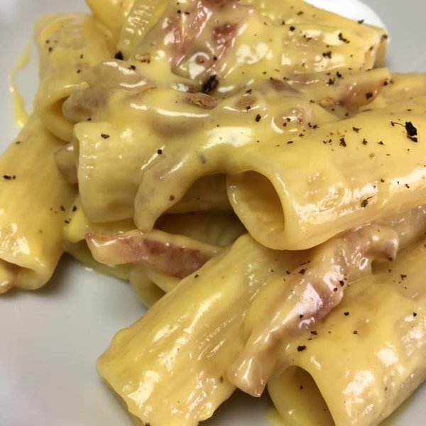

Carbonara sauce is a tipycal pasta sauce born in the region of Rome.
The sauce is mostly red egg with pecorino romano cheese, fried Guanciale and fresh ground pepper.
Carbonara is one of the most discussed recipes in the world.
This is the simplest and for me the best way to do a real* Carbonara.
Ingredients for 4 plates
- 320g Rigatoni pasta
- 5 red egg
- 150g ground Pecorino romano
- 50g ground Parmigiano
- 300g Guanciale
- Salt and fresh pepper
Steps
- Taglia il guanciale a listarelle, e mettilo a cuocere a fiamma medio-alta in una padella senza aggiunti di grassi; aggiungi il guanciale quando la padella è ancora fredda. Deve venire croccante fuori e sugoso dentro
- Nel frattempo, metti l’acqua a bollire con poco sale e crea la carbo-crema: 5 tuorli, pecorino romano e parmigiano (rapporto 3 a 1) e pepe nero. Mettere tutto in una scodellina e creare un pastello più o meno denso.
- Nel frattempo, il guanciale si sarà croccato: tenere da parte al caldo e lasciare un po’ di guanciale nella padella (pulendola dai residui di pepe del guanciale) e un cucchiaio unirlo alla carbo-crema.
- Buttare la pasta e cuocere fino a che mancano 2 minuti alla cottura al dente; al dunque, scolarla nella padella calda dove hai cotto il guanciale, con del pepe che avrai fatto tostare nel grasso rimasto. Aggiungere dell’acqua di cottura e risottare
- A cottura ultimata, chiudere il fuoco e mantecare a fiamma spenta per 1 min circa; allora aggiungere la carbo-crema (non prima, altrimenti fai un frittata). Mantecare e aggiungere acqua di cottura se necessario.
- Quando si sarà formata una super cremina, impiattare aggiungendo il guanciale croccante e pepe nero e pecorino a piacere. Buon appetito!!!
*the term real is intended as real for the author, don't claiming is the real and original recipe.